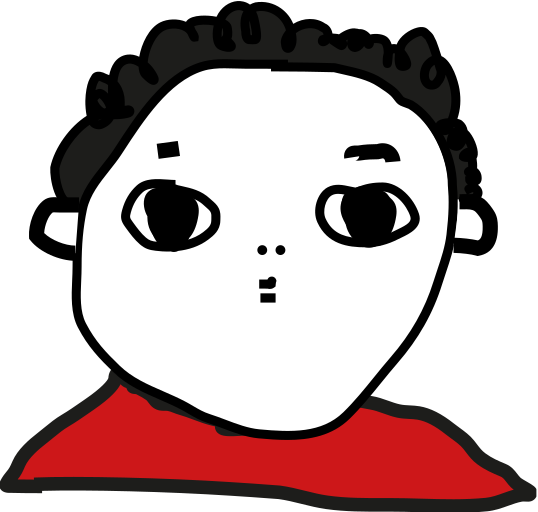

Qui suis-je ?
←
Bonjour, je suis en seconde année de DNMADE Graphisme et Image de Communication à Auguste Renoir. J’ai un grand intérêt pour le dessin de caractères typographiques (en cours), l’illustration, le flat design (en cours aussi) ainsi que l’exploration plastique à travers divers matériaux et médiums.

JE CHERCHE AUSSI UN STAGE D’UNE DURÉE DE 3 MOIS ENTRE AVRIL ET JUIN !
- cv.pdf
2026